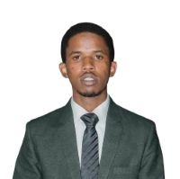

TUYISHIMIRE Bienvenue Concorde | WDD 130

I am a Rwandan by birth and residence, born in Ngororero District, Western Province, Rwanda. I am passionate about learning, innovation, healthcare, and technology, with a strong desire to contribute to solving societal challenges.
I studied Mathematics, Chemistry, and Biology (MCB) in secondary school, which paved the way for me to pursue a Bachelor of Science with Honours in General Nursing at the University of Rwanda, from which I graduated in 2026. During my nursing studies, I developed a strong interest in healthcare research, public health, and improving healthcare delivery. I also gained experience in research activities, community health initiatives, mentorship, and leadership through my involvement in the Nursing Research Club and my research internship at King Faisal Hospital Rwanda.
Recognizing the growing role of digital technologies in addressing healthcare challenges, I decided to expand my knowledge beyond nursing by joining BYU-Pathway Worldwide to pursue a bachelor's degree in Software Development. I am currently completing my first certificate.
My long-term goal is to bridge healthcare and technology by developing innovative digital solutions that improve healthcare accessibility, disease surveillance, research, and healthcare delivery, particularly in Rwanda and other underserved communities. I believe combining healthcare knowledge with technology can create meaningful and sustainable impact.
- Aba Nigeria Temple
- Abidjan Ivory cost Temple
- Abuja Nigeria Temple